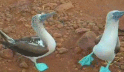

Birds are the most magnificant creatures to ever roam about the Earth. Birds come in a variety of shapes, sizes, and colors.
One of the most amazing birds in existence is the blue-footed booby. Blue footed boobies have blue feet, a color which is a byproduct of their shrimp diet. The bluer the feet, the more attractive the bird for mating. Blue footed boobies do a silly dance when they mate that shows off their blue feet.